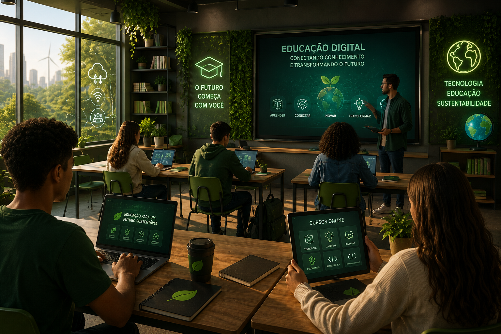

Plataformas online, IA e recursos interativos estão revolucionando o ensino.
A Educação Digital utiliza computadores, tablets, plataformas online, inteligência artificial e recursos multimídia para tornar o processo de aprendizagem mais dinâmico, acessível e interativo. Com essas tecnologias, estudantes podem aprender em qualquer lugar, desenvolver novas habilidades e acessar conteúdos atualizados de forma rápida.
Ambientes virtuais que oferecem videoaulas, atividades, avaliações e acompanhamento do desempenho dos estudantes.
Sistemas inteligentes ajudam a personalizar o aprendizado, responder dúvidas e recomendar conteúdos específicos para cada aluno.
Aplicativos, jogos educativos, realidade aumentada e simuladores tornam as aulas mais envolventes e facilitam a compreensão dos conteúdos.
Acesso facilitado a conteúdos educacionais digitais.
Disponibilidade de plataformas de ensino online.
Maior engajamento com recursos interativos.